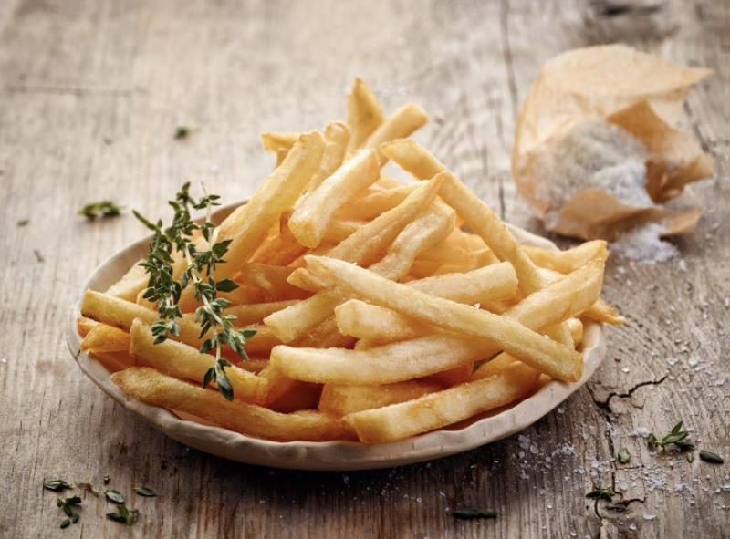

Papas Fritas
Receta de papas fritas caseras

Papas Fritas Caseras
Ingredientes
3 o 4 papas (300gr)
Aceite
Sal
Elaboracion (pasos)
Pelar las papas
Cortalas en baston
Calentar aceite en una sarten
Cocinar hasta que esten doradas
Removerlas del aceite